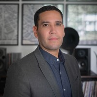
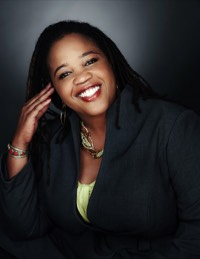

The news business
Newsrooms, media ownership, AI in the newsroom, the future of journalism.
0 films · 10 sessions · 34 people
Often together with: Documentary craftHealth & medicineLegal & safety for reportersMigration & bordersInvestigative methodsIndigenous peoples & land
Films
- None.
Sessions
- 2023 · Thu Nov 2 · 2:15 PMPanel · DX²The Art of Visual NewsReema Akkad, Erica Berenstein, Rozina Breen, Margaret “Mishi” Ebrahim
- 2023 · Thu Nov 2 · 9:30amPanel · DX²Working Intersectionally – News & DocumentaryEvan Mascagni, Kimberly Mitchell, Kathy Kieliszewski, Lauren Pabst
- 2023 · Thu Nov 2 · 9:30 AMConversationWorking Intersectionally: News and Documentary (Opening Conversation)Lauren Pabst, Kathy Kieliszewski, Kimberly Mitchell, Evan Mascagni
- 2021 · Wed Oct 13 · 1:15pmPanelAugmented Reality and the New Frontiers of JournalismEileen Guo, Jenna Pirog, Karthik Patanjali, Ziv Schneider, Ray Soto
- 2021 · Fri Oct 15 · 9:30amPanel · DX²Constructing the New/s: Year OneJessica Clark, Farai Chideya
- 2021PanelFINDING YOUR STORY’S VOICE: A <em>MY FUGITIVE</em> CASE STUDYNina Gilden Seavey
- 2019 · Thu Oct 10 · 11:00 AMPanel · DX²Investigative Podcasts: The Sound and the FuryLaura Beil, Jennifer Forde, Samara Freemark, Sarah Larson
- 2019 · Thu Oct 10 · 2:45 PMPanel · DX²The Visual NewsroomKatie Campbell, Lindsay Crouse, Lauren Feeney, Cassandra Giraldo, Amanda Pike, Zach Toombs, Patricia Aufderheide
- 2018 · Sat Oct 13 · 2:15 PMWorkshopWorkshop: Exposing the InvisibleLaura Ranca
- 2017 · Fri Oct 20 · 3:00 PMPanelGive/Get: Cross-Sector Collaboration in Film and JournalismCaty Borum Chattoo, Clare Chambers, Katerina Cizek, Saleem Khan, James West, Barbie Zelizer, Patricia Aufderheide
People most involved

 Lauren PabstPanelist, moderator · 4 editions, 2019–2025The John D. and Catherine T. MacArthur Foundation
Lauren PabstPanelist, moderator · 4 editions, 2019–2025The John D. and Catherine T. MacArthur Foundation

 Evan MascagniPanelist · 2023
Evan MascagniPanelist · 2023- Caty Borum ChattooModerator, panelist · 2 editions, 2015–2017School of Communication, American University
 Katerina CizekPanelist · 2 editions, 2017–2021
Katerina CizekPanelist · 2 editions, 2017–2021- Laura BeilPanelist · 2019
- Jennifer FordePanelist · 2019

 Amanda PikePanelist, filmmaker, moderator · 6 editions, 2019–2025The Center for Investigative Reporting
Amanda PikePanelist, filmmaker, moderator · 6 editions, 2019–2025The Center for Investigative Reporting


 Eileen GuoPanelist · 2021
Eileen GuoPanelist · 2021- Jenna PirogPanelist · 2021
 Karthik PatanjaliPanelist · 2021
Karthik PatanjaliPanelist · 2021 Ziv SchneiderPanelist · 2021
Ziv SchneiderPanelist · 2021
Ray SotoPanelist · 2021

Farai ChideyaPanelist · 2021 Nina Gilden SeaveyPanelist · 2 editions, 2017–2021The Documentary Center, The George Washington University
Nina Gilden SeaveyPanelist · 2 editions, 2017–2021The Documentary Center, The George Washington University